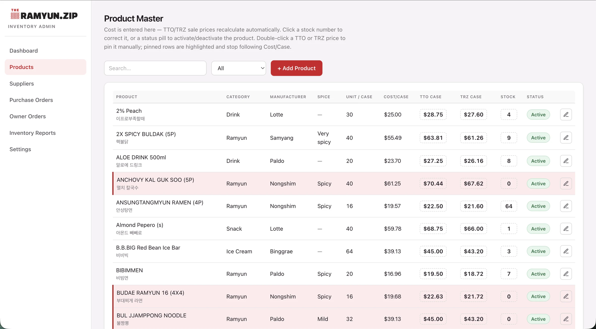
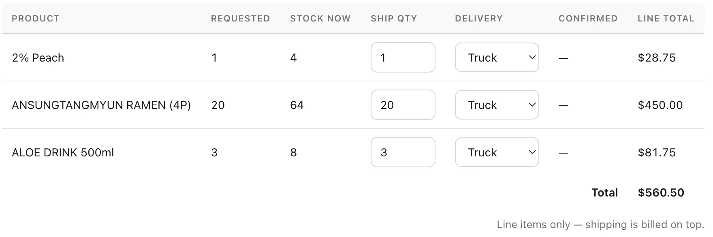
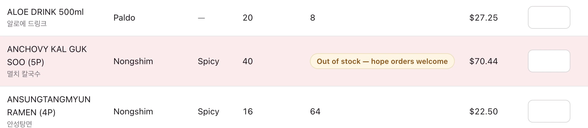
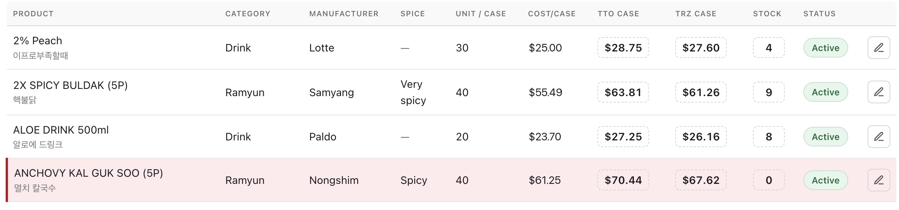
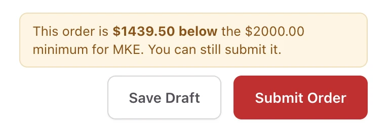

Five franchises ordered against a stock number that was already wrong by the time they saw it.
A Korean food distributor running its whole operation on nine Excel files and an email chain. I replaced them with one live system.
This did not change how the company runs. It accelerated it, made it harder to get wrong, and did not take a single person out of the process.

The number was accurate the moment it was copied.
A master file held the catalog, the supplier pricing and the stock count. Every store kept its own inventory sheet. When a store needed to order, someone copy-pasted rows out of the master into another sheet and emailed it out.
Every day, by hand, these stock numbers were changed and relayed up the chain. Orders arrived for things that had sold out in between. The count drifted. The answer to any question about an order lived in somebody’s inbox.
I built it with Claude Code. Getting a working version stopped being the hard part almost immediately, so the job became deciding what it should do, and most of that was deciding what it should not do.
I could not ask them to change how they work. Five stores, a warehouse and an office already had a rhythm.
My wife handles the orders and deals with the distributors. We worked evenings, after both our workdays. That is why it took two weeks, and why none of it is guesswork.
Four things the spreadsheets could not hold.
BeforeOrder status lived in an email chain between the ordering desk, her boss, and his boss.
AfterAny admin signs in and sees it submitted, what was submitted, reviewed, approved and shipped, on one screen.
Live stockBeforeStock was copy-pasted into an email. It was wrong before the order came back.
AfterOne live number. The store and the office read the same one.
Requested against shippedBeforeNo place to record what a store asked for separately from what actually went out.
AfterBoth numbers sit on every line, and the invoice bills the confirmed one.
InvoicingBeforeInvoices were assembled by hand after the fact, from whatever the final email said.
AfterConfirming an order raises the invoice in QuickBooks and sends it to the store with a pay button.

“Stock shown here is live. Requesting an item does not reserve it. Final quantities are confirmed by THE TOUCH ON based on stock at the time your order is processed.”
Live stock only works if the store understands what it is looking at, so it is explained where they order.Most of the work was refusing to design things out.
Stores already ordered items showing zero, expecting stock to arrive. Blocking it would have pushed those requests back into email, so the line is recorded and flagged for the office to fill.
Going under a store’s minimum is a conversation between the office and the store. The cart says how far under and leaves Submit enabled.
Orders split, bulk on a truck and one urgent item by UPS, so the method is chosen per item. The ship date stays on the order.
Stock is a running total of logged events rather than a typed cell. Every adjustment records who made it, when, and why.
A spreadsheet everyone can open has no permission model. Office accounts sign in through the company Google domain, franchise accounts are created and approved from the dashboard, and a store can only ever see its own catalog and its own orders.
A row can be price-pinned and out of stock at the same time. It reads as out of stock, and the pin is marked on the price cell.



They were already in demos with a $249 a month vendor.
The company had started shopping for an inventory platform. They cancelled further contact with MarketMan after seeing this do what they needed.
It was built with Claude Code and it does not need Claude Code. There is no subscription, no vendor, and nothing to renew. If the tooling I used to build it changed tomorrow, the company would not notice. They own it outright, which is the part I am most pleased with.
In beta, in use.
Everyone who will use it is using it. The warehouse and the IT contact both reviewed it and signed off without asking for changes. I have not called it finished, because it is still collecting the kind of feedback you only get from real weeks of real orders.